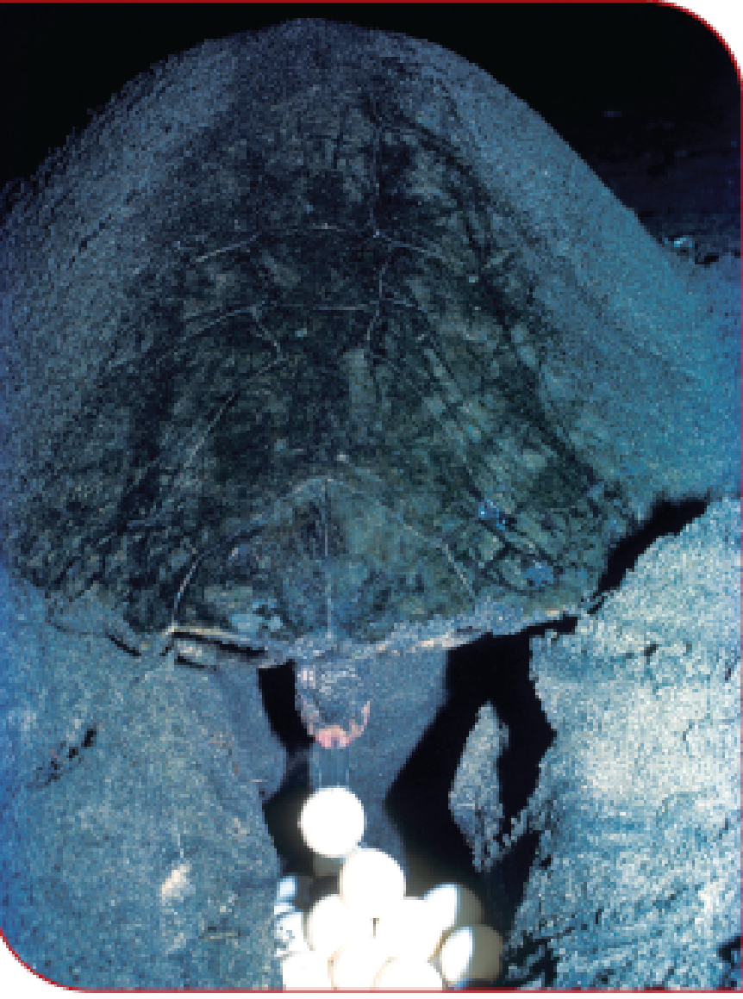

The description of the picture is begins

The picture shows the female Olive Ridley digs a hollow space with its spoon like limbs and lays eggs.
The description of the picture is ends
Between the months of January and March, female Olive Ridleys come ashore at night to lay their eggs. This is quite a problem for them, as a turtle's front flippers enable it to swim gracefully and effortlessly but are not very useful for moving on land. The turtle has to haul itself laboriously onto the beach. Then it chooses a spot well away from the high-tide line. Here, it scoops out a nest cavity 45 centimetre deep, into which it lays about 100 eggs. Each egg is in the shape and size of a table tennis ball. Once all the eggs are laid, the turtle fills in the cavity, then it camouflages the nest by tossing sand on it using its flippers. That done, it returns to the sea. The eggs are left to incubate under the warmth of the sun.
In many places around the world, local people follow the tracks of the turtle to its nest. They collect the eggs for eating. Jackals, domestic dogs and pigs too dig up and eat the eggs by following the scent left by the turtle. Those eggs that escape such people and predators hatch 45-60 days later. The hatchlings slash open the leathery eggshell with the help of a tiny 'egg-tooth’. This is like a razor blade at the tip of a hatchling's snout. When most of the eggs have hatched, the hatchlings push themselves upwards through the sand and emerge on the surface of the beach. From here they make a hurried ,dash, to the sea.
flippers - broad, flat limbs used for swimming
haul - pull with force
laboriously - with great effort
cavity - a hollow space
camouflage - hide or disguise something
incubate - hatch eggs using warmth
predators - animals that kill other animals for food
slash – cut
snout - pointed nose of an animal
emerge - come out